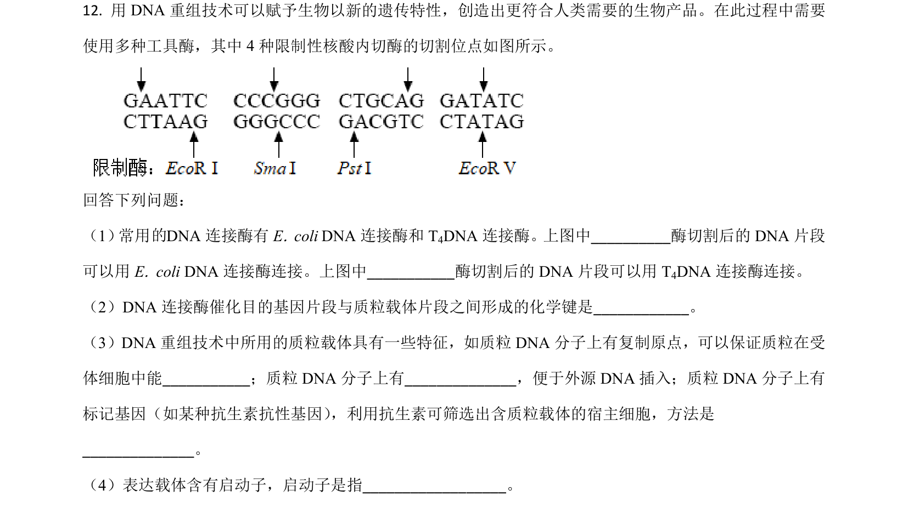
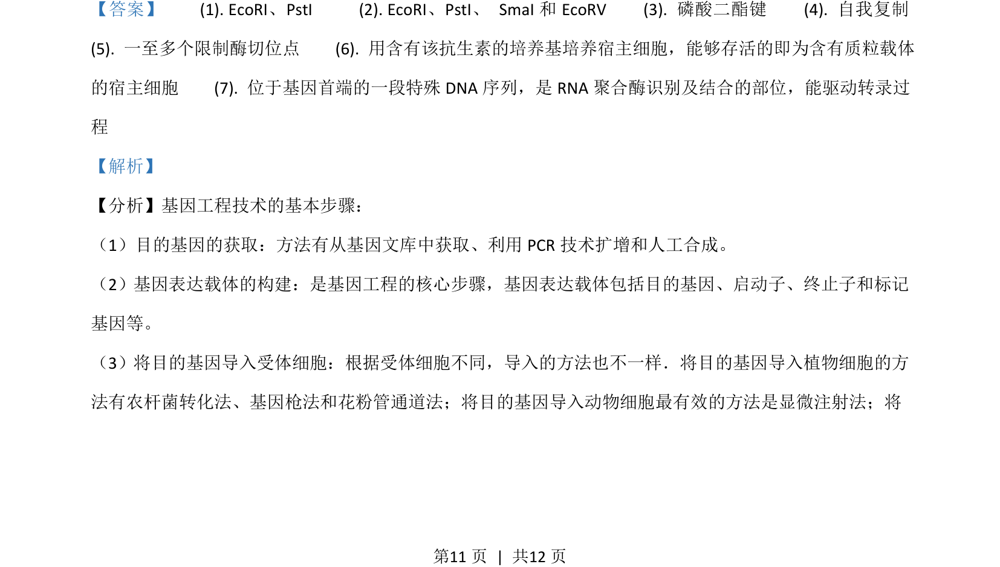
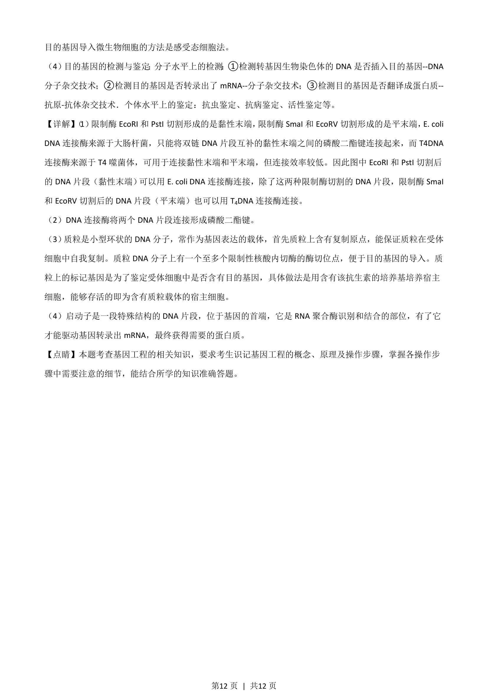

考点：基因工程 限制酶 DNA连接酶 质粒载体

考查DNA重组技术中限制酶、DNA连接酶及质粒载体的功能与应用。


📄 原 PDF 第 11 页：
素材/真题/吉林/2008-2024·（吉林）生物高考真题/2021年高考生物试卷（全国乙卷）（解析卷）.pdf
【答案】 (1). EcoRI 、PstI (2). EcoRI 、PstI、 SmaI 和 EcoRV (3). 磷酸二酯键 (4). 自我复制
(5). 一至多个限制酶切位点 (6). 用含有该抗生素的培养基培养宿主细胞，能够存活的即为含有质粒载体
的宿主细胞 (7). 位于基因首端的一段特殊 DNA序列，是 RNA聚合酶识别及结合的部位，能驱动转录过
程
【解析】
【分析】基因工程技术的基本步骤：
（1）目的基因的获取：方法有从基因文库中获取、利用 PCR技术扩增和人工合成。
（2）基因表达载体的构建：是基因工程的核心步骤，基因表达载体包括目的基因、启动子、终止子和标记
基因等。
（3）将目的基因导入受体细胞：根据受体细胞不同，导入的方法也不一样．将目的基因导入植物细胞的方
法有农杆菌转化法、基因枪法和花粉管通道法；将目的基因导入动物细胞最有效的方法是显微注射法；将
的